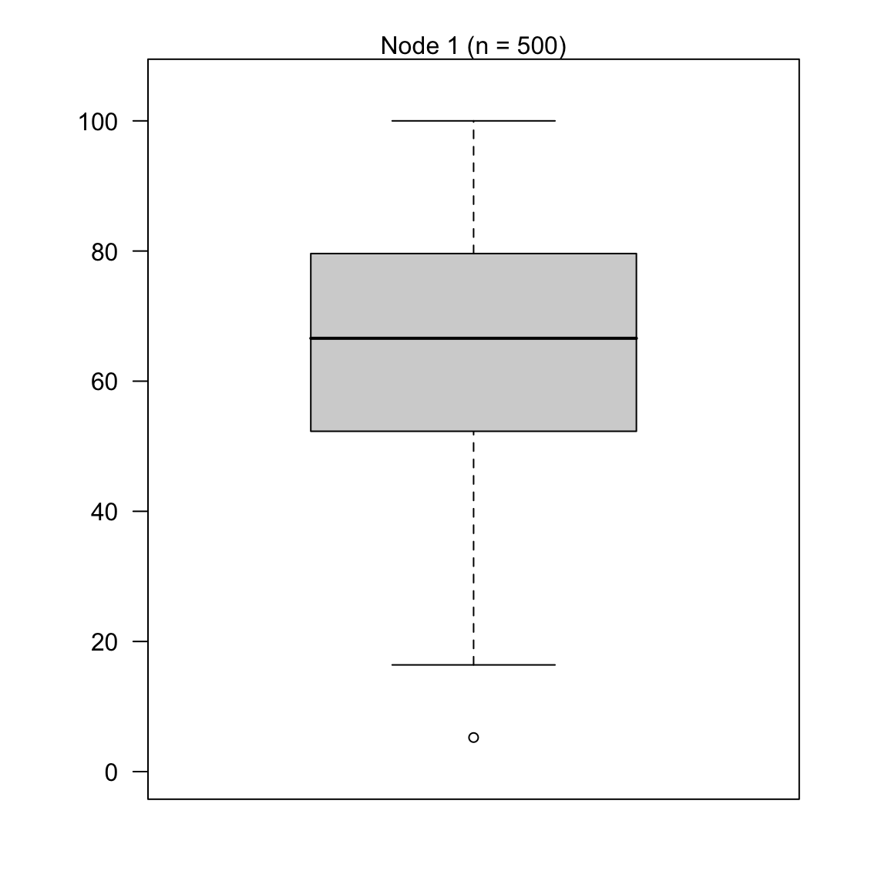

Prediction
|
Machine Learning with R The R Bootcamp |

|
from Medium.com

Overview
By the end of this practical you will know how to:
- Fit regression, decision trees and random forests to training data.
- Compare the fitting and prediction performance of two models for training and test data.
Tasks
A - Setup
Open your
TheRBootcampR project.Open a new R script. At the top of the script, using comments, write your name and the date.
## NAME
## DATE
## Prediction practicalSave it as a new file called
Prediction_practical.Rin the2_Codefolder.Using
library()load the packagestidyverse,caret,party,partykit.
# Load packages necessary for this script
library(tidyverse)
library(caret)
library(party)
library(partykit)- Using
trainControl(), create again thectrl_noneobject withmethod = "none".
# Set training method to "none"
ctrl_none <- trainControl(method = "XX")# Set training method to "none"
ctrl_none <- trainControl(method = "none")Dataset 1: College graduation
B - Load the graduation data
- Using
read_csv(), read in the datasetsgraduation_train.csvandgraduation_test.csv.
# College data
college_train <- read_csv(file = "1_Data/college_train.csv")
college_test <- read_csv(file = "1_Data/college_test.csv")- Print the data sets to make sure everything’s alright.
# Print data sets to the console
college_train# A tibble: 500 x 18
Private Apps Accept Enroll Top10perc Top25perc F.Undergrad P.Undergrad
<chr> <dbl> <dbl> <dbl> <dbl> <dbl> <dbl> <dbl>
1 Yes 1202 1054 326 18 44 1410 299
2 No 1415 714 338 18 52 1345 44
3 Yes 4778 2767 678 50 89 2587 120
4 Yes 1220 974 481 28 67 1964 623
5 Yes 1981 1541 514 18 36 1927 1084
6 Yes 1217 1088 496 36 69 1773 884
7 No 8579 5561 3681 25 50 17880 1673
8 Yes 833 669 279 3 13 1224 345
9 No 10706 7219 2397 12 37 14826 1979
10 Yes 938 864 511 29 62 1715 103
# … with 490 more rows, and 10 more variables: Outstate <dbl>,
# Room.Board <dbl>, Books <dbl>, Personal <dbl>, PhD <dbl>, Terminal <dbl>,
# S.F.Ratio <dbl>, perc.alumni <dbl>, Expend <dbl>, Grad.Rate <dbl>college_test# A tibble: 277 x 18
Private Apps Accept Enroll Top10perc Top25perc F.Undergrad P.Undergrad
<chr> <dbl> <dbl> <dbl> <dbl> <dbl> <dbl> <dbl>
1 No 9251 7333 3076 14 45 13699 1213
2 Yes 1480 1257 452 6 25 2961 572
3 No 2336 1725 1043 10 27 5438 4058
4 Yes 1262 1102 276 14 40 978 98
5 Yes 959 771 351 23 48 1662 209
6 Yes 331 331 225 15 36 1100 166
7 Yes 804 632 281 29 72 840 68
8 No 285 280 208 21 43 1140 473
9 Yes 323 278 122 31 51 393 4
10 Yes 504 482 185 10 36 550 84
# … with 267 more rows, and 10 more variables: Outstate <dbl>,
# Room.Board <dbl>, Books <dbl>, Personal <dbl>, PhD <dbl>, Terminal <dbl>,
# S.F.Ratio <dbl>, perc.alumni <dbl>, Expend <dbl>, Grad.Rate <dbl>- Convert all character columns to factors in both training and test data using the code below.
# Convert all character features to factor
college_train <- college_train %>%
mutate_if(is.character, factor)
college_test <- college_test %>%
mutate_if(is.character, factor)C - Fitting
Regression
- Using
train()fit a regression model calledgraduation_glmpredictingGrad.Rateby all features. Specifically:
- for the
formargument, useGrad.Rate ~ .. - for the
dataargument, usecollege_trainin the data argument. - for the
methodargument, usemethod = "glm"for regression. - for the
trControlargument, use yourctrl_noneobject you created above.
# fit regression
graduation_glm <- train(form = XX ~ .,
data = XX,
method = "XX",
trControl = ctrl_none)graduation_glm <- train(form = Grad.Rate ~ .,
data = college_train,
method = "glm",
trControl = ctrl_none)- Explore your
graduation_glmobject by looking atgraduation_glm$finalModeland usingsummary(). What does the output tell you?
# show model
graduation_glm$XX
summary(XX)graduation_glm$finalModel
Call: NULL
Coefficients:
(Intercept) PrivateYes Apps Accept Enroll Top10perc
26.320597 2.075873 0.001243 -0.000965 0.006891 -0.100378
Top25perc F.Undergrad P.Undergrad Outstate Room.Board Books
0.289288 -0.001247 -0.001296 0.001436 0.001294 -0.000276
Personal PhD Terminal S.F.Ratio perc.alumni Expend
-0.001756 0.060658 -0.066585 0.330961 0.195720 -0.000369
Degrees of Freedom: 499 Total (i.e. Null); 482 Residual
Null Deviance: 189000
Residual Deviance: 121000 AIC: 4200summary(graduation_glm)
Call:
NULL
Deviance Residuals:
Min 1Q Median 3Q Max
-49.27 -10.69 0.25 10.41 49.36
Coefficients:
Estimate Std. Error t value Pr(>|t|)
(Intercept) 26.320597 7.282672 3.61 0.00033 ***
PrivateYes 2.075873 2.477211 0.84 0.40245
Apps 0.001243 0.000722 1.72 0.08554 .
Accept -0.000965 0.001339 -0.72 0.47151
Enroll 0.006891 0.003663 1.88 0.06056 .
Top10perc -0.100378 0.110002 -0.91 0.36196
Top25perc 0.289288 0.085752 3.37 0.00080 ***
F.Undergrad -0.001247 0.000584 -2.13 0.03328 *
P.Undergrad -0.001296 0.000565 -2.29 0.02224 *
Outstate 0.001436 0.000383 3.75 0.00020 ***
Room.Board 0.001294 0.000917 1.41 0.15922
Books -0.000276 0.005208 -0.05 0.95781
Personal -0.001756 0.001270 -1.38 0.16731
PhD 0.060658 0.090671 0.67 0.50382
Terminal -0.066585 0.096828 -0.69 0.49200
S.F.Ratio 0.330961 0.241530 1.37 0.17124
perc.alumni 0.195720 0.078634 2.49 0.01315 *
Expend -0.000369 0.000257 -1.44 0.15098
---
Signif. codes: 0 '***' 0.001 '**' 0.01 '*' 0.05 '.' 0.1 ' ' 1
(Dispersion parameter for gaussian family taken to be 251)
Null deviance: 188828 on 499 degrees of freedom
Residual deviance: 121047 on 482 degrees of freedom
AIC: 4202
Number of Fisher Scoring iterations: 2- Using
predict()save the fitted values ofgraduation_glmobject asglm_fit.
# Save fitted values of regression model
glm_fit <- predict(XX)glm_fit <- predict(graduation_glm)Decision Trees
- Using
train(), fit a decision tree model calledgraduation_rpartpredictingGrad.Rateby all features. Specifically:
- for the
formargument, useGrad.Rate ~ .. - for the
dataargument, usecollege_train. - for the
methodargument, usemethod = "rpart"to create decision trees. - for the
trControlargument, use yourctrl_noneobject you created before.
# fit decision tree
graduation_rpart <- train(form = XX ~ .,
data = XX,
method = "XX",
trControl = XX) # fit decision tree
graduation_rpart <- train(form = Grad.Rate ~ .,
data = college_train,
method = "rpart",
trControl = ctrl_none) - Explore your
graduation_rpartobject by looking atgraduation_rpart$finalModeland plotting it withplot(as.party(graduation_rpart$finalModel)). What do you make of the output?
graduation_rpart$finalModeln= 500
node), split, n, deviance, yval
* denotes terminal node
1) root 500 189000 65.4 *plot(as.party(graduation_rpart$finalModel))
- Using
predict(), save the fitted values ofgraduation_rpartobject asrpart_fit.
# Save fitted values of decision tree model
rpart_fit <- predict(XX)rpart_fit <- predict(graduation_rpart)Random Forests
- Using
train(), fit a random forest model calledgraduation_rfpredictingGrad.Rateby all features. Specifically:
- for the
formargument, useGrad.Rate ~ .. - for the
dataargument, usecollege_train. - for the
methodargument, usemethod = "rf"to fit random forests. - for the
trControlargument, use yourctrl_noneobject you created before.
# fit random forest
graduation_rf <- train(form = XX ~ .,
data = XX,
method = "XX",
trControl = XX)# fit random forest
graduation_rf <- train(form = Grad.Rate ~ .,
data = college_train,
method = "rf",
trControl = ctrl_none)- Using
predict(), save the fitted values ofgraduation_rfasrf_fit.
# Save fitted values of random forest model
rf_fit <- predict(XX)rf_fit <- predict(graduation_rf)Assess fitting accuracy
- Save the true training criterion (
Grad.Rate) in an object calledcriterion_train.
# Store training criterion
criterion_train <- XX$XX# Store training criterion
criterion_train <- college_train$Grad.Rate- Using
postResample(), determine the fitting performance of each of your models separately. Make sure to set yourcriterion_trainvalues to theobsargument, and your true model fitsXX_fitto thepredargument.
# Regression accuracy
postResample(pred = XX, obs = XX)
# Decision tree accuracy
postResample(pred = XX, obs = XX)
# Random forest accuracy
postResample(pred = XX, obs = XX)# Regression accuracy
postResample(pred = glm_fit, obs = criterion_train) RMSE Rsquared MAE
15.559 0.359 12.443 # Decision tree accuracy
postResample(pred = rpart_fit, obs = criterion_train) RMSE Rsquared MAE
19.4 NA 16.0 # Random forest accuracy
postResample(pred = rf_fit, obs = criterion_train) RMSE Rsquared MAE
6.959 0.925 5.513 - What do you make of these results? Which model had the best fit?
D - Prediction
- Save the criterion values from the test data set as a new object called
criterion_test.
# Store test criterion
criterion_test <- XX$XX# Store test criterion
criterion_test <- college_test$Grad.Rate- Using
predict(), calculate the predicted values of each model for the test datacollege_testasglm_pred,rpart_predandrf_pred.
# Regression predicted values
glm_pred <- predict(XX, newdata = XX)
# Decision trees predicted values
rpart_pred <- predict(XX, newdata = XX)
# Random forests predicted values
rf_pred <- predict(XX, newdata = XX)# Regression predicted values
glm_pred <- predict(graduation_glm, newdata = college_test)
# Decision trees predicted values
rpart_pred <- predict(graduation_rpart, newdata = college_test)
# Random forests predicted values
rf_pred <- predict(graduation_rf, newdata = college_test)- Using
postResample(), determine the prediction performance of each of your models for the test criterioncriterion_test.
# Regression prediction performance
postResample(pred = XX, obs = XX)
# Decision trees prediction performance
postResample(pred = XX, obs = XX)
# Random forests prediction performance
postResample(pred = XX, obs = XX)# Regression prediction performance
postResample(pred = glm_pred, obs = criterion_test) RMSE Rsquared MAE
16.412 0.305 13.204 # Decision trees prediction performance
postResample(pred = rpart_pred, obs = criterion_test) RMSE Rsquared MAE
19.6 NA 16.4 # Random forests prediction performance
postResample(pred = rf_pred, obs = criterion_test) RMSE Rsquared MAE
15.807 0.361 12.798 - How does each model’s prediction performance compare to its fitting performance? Is it worse? Better? The same? What does the change tell you about the models?
# The regression goodness of fit stayed the most constant. The random forest one droped considerably.- Which of the three models has the best prediction performance?
# The random forest predictions are still the most accurate.- If you had to use one of these three models in the real-world, which one would it be?
Dataset 2: House sales
E - Load the house data
- Create a section in your script by copying the template below.
# House prices ------------------------------------------------------------- In this section you will analyze house sales data from King County, Washington. Run the code below to load the
house_trainandhouse_testdatasets.
# house data
house_train <- read_csv(file = "1_Data/house_train.csv")
house_test <- read_csv(file = "1_Data/house_test.csv")- Print the datasets to the console to get an idea of their contents.
# Print dataframes to the console
house_train# A tibble: 5,000 x 19
price bedrooms bathrooms sqft_living sqft_lot floors waterfront view
<dbl> <dbl> <dbl> <dbl> <dbl> <dbl> <dbl> <dbl>
1 176000 2 1 770 5200 1 0 0
2 370000 2 1 850 6213 1 0 0
3 875909 4 2.5 3610 13292 2 0 0
4 100000 2 1 770 17334 1 0 0
5 580000 3 1.75 1850 2797 1 0 0
6 577000 5 2.75 1940 5000 2 0 0
7 665000 4 2.5 2600 17388 2 0 0
8 425000 3 1.5 1970 13709 1 0 0
9 225000 3 1 660 6600 1 0 0
10 660000 5 2.25 2540 3750 1.5 0 0
# … with 4,990 more rows, and 11 more variables: condition <dbl>, grade <dbl>,
# sqft_above <dbl>, sqft_basement <dbl>, yr_built <dbl>, yr_renovated <dbl>,
# zipcode <dbl>, lat <dbl>, long <dbl>, sqft_living15 <dbl>, sqft_lot15 <dbl>house_test# A tibble: 1,000 x 19
price bedrooms bathrooms sqft_living sqft_lot floors waterfront view
<dbl> <dbl> <dbl> <dbl> <dbl> <dbl> <dbl> <dbl>
1 4.95e5 3 1.75 1890 6557 1 0 0
2 5.90e5 3 3.5 1970 5079 2 0 0
3 5.25e5 3 2.25 2100 40510 2 0 0
4 3.75e5 3 1 1520 10798 1 0 0
5 2.45e5 4 2.25 2050 7700 2 0 0
6 1.12e6 3 2.5 4530 22873 2 0 2
7 4.00e5 2 2.5 1340 1240 2 0 0
8 5.33e5 4 2.75 2790 6685 2 0 0
9 7.45e5 4 2.5 3170 5100 2 0 0
10 3.40e5 2 1 800 3090 1 0 0
# … with 990 more rows, and 11 more variables: condition <dbl>, grade <dbl>,
# sqft_above <dbl>, sqft_basement <dbl>, yr_built <dbl>, yr_renovated <dbl>,
# zipcode <dbl>, lat <dbl>, long <dbl>, sqft_living15 <dbl>, sqft_lot15 <dbl>- Again, a little bit of data cleaning. Convert all character features to factor.
# Convert all character to factor
house_train <- house_train %>%
mutate_if(is.character, factor)
house_test <- house_test %>%
mutate_if(is.character, factor)F - Fitting
Regression
- Using
train(), fit a regression model calledprice_glmpredicting the house sale price (price) using all features inhouse_train. Specifically:
- for the
formargument, useprice ~ .. - for the
dataargument, usehouse_train. - for the
methodargument, usemethod = "glm"for regression. - for the
trControlargument, use yourctrl_noneobject you created in the beginning.
# fit regression
price_glm <- train(form = price ~ .,
data = house_train,
method = "glm",
trControl = ctrl_none)- Explore your
price_glmobject by looking atprice_glm$finalModeland usingsummary(). What do you find?
price_glm$finalModel
Call: NULL
Coefficients:
(Intercept) bedrooms bathrooms sqft_living sqft_lot
1.07e+05 -4.64e+04 5.35e+04 1.47e+02 2.31e-01
floors waterfront view condition grade
5.03e+03 6.40e+05 5.84e+04 3.03e+04 9.74e+04
sqft_above sqft_basement yr_built yr_renovated zipcode
2.40e+01 NA -2.61e+03 4.31e+00 -5.42e+02
lat long sqft_living15 sqft_lot15
6.14e+05 -2.32e+05 2.71e+01 -2.63e-01
Degrees of Freedom: 4999 Total (i.e. Null); 4982 Residual
Null Deviance: 6.81e+14
Residual Deviance: 2.02e+14 AIC: 136000summary(price_glm)
Call:
NULL
Deviance Residuals:
Min 1Q Median 3Q Max
-1114590 -98269 -10834 76308 4063119
Coefficients: (1 not defined because of singularities)
Estimate Std. Error t value Pr(>|t|)
(Intercept) 1.07e+05 6.13e+06 0.02 0.98603
bedrooms -4.64e+04 4.14e+03 -11.19 < 2e-16 ***
bathrooms 5.35e+04 7.00e+03 7.65 2.4e-14 ***
sqft_living 1.47e+02 9.33e+00 15.73 < 2e-16 ***
sqft_lot 2.31e-01 1.02e-01 2.26 0.02360 *
floors 5.03e+03 7.62e+03 0.66 0.50982
waterfront 6.40e+05 3.53e+04 18.14 < 2e-16 ***
view 5.84e+04 4.52e+03 12.94 < 2e-16 ***
condition 3.03e+04 4.82e+03 6.28 3.6e-10 ***
grade 9.74e+04 4.43e+03 21.99 < 2e-16 ***
sqft_above 2.40e+01 9.25e+00 2.60 0.00935 **
sqft_basement NA NA NA NA
yr_built -2.61e+03 1.54e+02 -16.92 < 2e-16 ***
yr_renovated 4.31e+00 7.99e+00 0.54 0.58986
zipcode -5.42e+02 6.84e+01 -7.92 3.0e-15 ***
lat 6.14e+05 2.25e+04 27.28 < 2e-16 ***
long -2.32e+05 2.71e+04 -8.55 < 2e-16 ***
sqft_living15 2.71e+01 7.12e+00 3.81 0.00014 ***
sqft_lot15 -2.63e-01 1.60e-01 -1.64 0.10008
---
Signif. codes: 0 '***' 0.001 '**' 0.01 '*' 0.05 '.' 0.1 ' ' 1
(Dispersion parameter for gaussian family taken to be 4.06e+10)
Null deviance: 6.8104e+14 on 4999 degrees of freedom
Residual deviance: 2.0203e+14 on 4982 degrees of freedom
AIC: 136339
Number of Fisher Scoring iterations: 2- Using
predict(), save the fitted values ofprice_glmobject asglm_fit.
# Store fitted values
glm_fit <- predict(price_glm)Decision tree
- Using
train(), fit a decision tree model calledprice_rpartpredictingpriceusing all features inhouse_train. Specifically:
- for the
formargument, useprice ~ .. - for the
dataargument, usehouse_train. - for the
methodargument, usemethod = "rpart"to create decision trees. - for the
trControlargument, use yourctrl_noneobject you created before.
# fit decision tree
price_rpart <- train(form = price ~ .,
data = house_train,
method = "rpart",
trControl = ctrl_none) - Explore your
price_rpartobject by looking atprice_rpart$finalModeland plotting it withplot(as.party(price_rpart$finalModel)). What do you find?
price_rpart$finalModeln= 5000
node), split, n, deviance, yval
* denotes terminal node
1) root 5000 6.81e+14 537000 *plot(as.party(price_rpart$finalModel))- Using
predict()save the fitted values ofprice_rpartobject asrpart_fit.
# Store fitted values
rpart_fit <- predict(price_rpart)Random Forests
- Using
train(), fit a random forest model calledprice_rfpredictingpriceusing all features inhouse_train. Specifically:
- for the
formargument, useprice ~ .. - for the
dataargument, usehouse_trainin the data argument. - for the
methodargument, usemethod = "rf"to fit random forests. - for the
trControlargument, use yourctrl_noneobject you created before.
price_rf <- train(form = price ~ .,
data = house_train,
method = "rf",
trControl = ctrl_none)- Using
predict()save the fitted values ofprice_rfobject asrf_fit.
# store fitted values
rf_fit <- predict(price_rf)Assess accuracy
- Save the true training criterion values as a vector called
criterion_train.
# store criterion
criterion_train <- house_train$price- Using
postResample(), determine the fitting performance of each of your models separately.
# Regression
postResample(pred = glm_fit, obs = criterion_train) RMSE Rsquared MAE
2.01e+05 7.03e-01 1.25e+05 # Decision Trees
postResample(pred = rpart_fit, obs = criterion_train) RMSE Rsquared MAE
369063 NA 232500 # Random Forests
postResample(pred = rf_fit, obs = criterion_train) RMSE Rsquared MAE
6.59e+04 9.75e-01 3.40e+04 - Which model had the best fit? Same model as for the graduation data?
G - Prediction
- Save the criterion values from the test data set as a new vector called
criterion_test.
# store criterion of test data
criterion_test <- house_test$price- Using
predict(), save the predicted values of each model for the test data asglm_pred,rpart_predandrf_pred.
# Regression
glm_pred <- predict(price_glm,
newdata = house_test)
# Decision Trees
rpart_pred <- predict(price_rpart,
newdata = house_test)
# Random Forests
rf_pred <- predict(price_rf,
newdata = house_test)- Using
postResample(), determine the prediction performance of each of your models.
# Regression
postResample(pred = glm_pred, obs = criterion_test) RMSE Rsquared MAE
1.92e+05 7.03e-01 1.26e+05 # Decision Trees
postResample(pred = rpart_pred, obs = criterion_test) RMSE Rsquared MAE
351741 NA 224747 # Random Forests
postResample(pred = rf_pred, obs = criterion_test) RMSE Rsquared MAE
1.27e+05 8.77e-01 7.49e+04 How does each model’s prediction performance compare to its fitting performance? Is it worse? Better? The same? What does the change tell you about the models?
Which of the three models has the best prediction performance?
Contemplate, if you had to use one of these three models in the real-world, which one would it be? Any different
X - Challenges:
- For either dataset try to find feature sets that lead to the best possible prediction performance.
Examples
# Fitting and evaluating regression, decision trees, and random forests
# Step 0: Load packages-----------
library(tidyverse) # Load tidyverse for dplyr and tidyr
library(caret) # For ML mastery
library(partykit) # For decision trees
library(party) # For decision trees
# Step 1: Load and Clean, and Explore Training data ----------------------
# training data
data_train <- read_csv("1_Data/mpg_train.csv")
# test data
data_test <- read_csv("1_Data/mpg_test.csv")
# Convert all characters to factor
# Some ML models require factors
data_train <- data_train %>%
mutate_if(is.character, factor)
data_test <- data_test %>%
mutate_if(is.character, factor)
# Explore training data
data_train # Print the dataset
View(data_train) # Open in a new spreadsheet-like window
dim(data_train) # Print dimensions
names(data_train) # Print the names
# Define criterion_train
# We'll use this later to evaluate model accuracy
criterion_train <- data_train$hwy
# Step 2: Define training control parameters -------------
# In this case, I will set method = "none" to fit to
# the entire dataset without any fancy methods
ctrl_none <- trainControl(method = "none")
# Step 3: Train model: -----------------------------
# Criterion: hwy
# Features: year, cyl, displ
# Regression --------------------------
hwy_glm <- train(form = hwy ~ year + cyl + displ,
data = data_train,
method = "glm",
trControl = ctrl_none)
# Look at summary information
hwy_glm$finalModel
summary(hwy_glm)
# Save fitted values
glm_fit <- predict(hwy_glm)
# Calculate fitting accuracies
postResample(pred = glm_fit,
obs = criterion_train)
# Decision Trees ----------------
hwy_rpart <- train(form = hwy ~ year + cyl + displ,
data = data_train,
method = "rpart",
trControl = ctrl_none)
# Look at summary information
hwy_rpart$finalModel
plot(as.party(hwy_rpart$finalModel)) # Visualise your trees
# Save fitted values
rpart_fit <- predict(hwy_rpart)
# Calculate fitting accuracies
postResample(pred = rpart_fit, obs = criterion_train)
# Random Forests -------------------------
hwy_rf <- train(form = hwy ~ year + cyl + displ,
data = data_train,
method = "rf",
trControl = ctrl_none)
# Look at summary information
hwy_rf$finalModel
# Save fitted values
rf_fit <- predict(hwy_rf)
# Calculate fitting accuracies
postResample(pred = rf_fit, obs = criterion_train)
# Visualise Accuracy -------------------------
# Tidy competition results
accuracy <- tibble(criterion_train = criterion_train,
Regression = glm_fit,
DecisionTrees = rpart_fit,
RandomForest = rf_fit) %>%
gather(model, prediction, -criterion_train) %>%
# Add error measures
mutate(se = prediction - criterion_train,
ae = abs(prediction - criterion_train))
# Calculate summaries
accuracy_agg <- accuracy %>%
group_by(model) %>%
summarise(mae = mean(ae)) # Calculate MAE (mean absolute error)
# Plot A) Scatterplot of truth versus predictions
ggplot(data = accuracy,
aes(x = criterion_train, y = prediction, col = model)) +
geom_point(alpha = .5) +
geom_abline(slope = 1, intercept = 0) +
labs(title = "Predicting mpg$hwy",
subtitle = "Black line indicates perfect performance")
# Plot B) Violin plot of absolute errors
ggplot(data = accuracy,
aes(x = model, y = ae, fill = model)) +
geom_violin() +
geom_jitter(width = .05, alpha = .2) +
labs(title = "Fitting Absolute Errors",
subtitle = "Numbers indicate means",
x = "Model",
y = "Absolute Error") +
guides(fill = FALSE) +
annotate(geom = "label",
x = accuracy_agg$model,
y = accuracy_agg$mae,
label = round(accuracy_agg$mae, 2))
# Step 5: Access prediction ------------------------------
# Define criterion_train
criterion_test <- data_test$hwy
# Save predicted values
glm_pred <- predict(hwy_glm, newdata = data_test)
rpart_pred <- predict(hwy_rpart, newdata = data_test)
rf_pred <- predict(hwy_rf, newdata = data_test)
# Calculate fitting accuracies
postResample(pred = glm_pred, obs = criterion_test)
postResample(pred = rpart_pred, obs = criterion_test)
postResample(pred = rf_pred, obs = criterion_test)
# Visualise Accuracy -------------------------
# Tidy competition results
accuracy <- tibble(criterion_test = criterion_test,
Regression = glm_pred,
DecisionTrees = rpart_pred,
RandomForest = rf_pred) %>%
gather(model, prediction, -criterion_test) %>%
# Add error measures
mutate(se = prediction - criterion_test,
ae = abs(prediction - criterion_test))
# Calculate summaries
accuracy_agg <- accuracy %>%
group_by(model) %>%
summarise(mae = mean(ae)) # Calculate MAE (mean absolute error)
# Plot A) Scatterplot of truth versus predictions
ggplot(data = accuracy,
aes(x = criterion_test, y = prediction, col = model)) +
geom_point(alpha = .5) +
geom_abline(slope = 1, intercept = 0) +
labs(title = "Predicting mpg$hwy",
subtitle = "Black line indicates perfect performance")
# Plot B) Violin plot of absolute errors
ggplot(data = accuracy,
aes(x = model, y = ae, fill = model)) +
geom_violin() +
geom_jitter(width = .05, alpha = .2) +
labs(title = "Prediction Absolute Errors",
subtitle = "Numbers indicate means",
x = "Model",
y = "Absolute Error") +
guides(fill = FALSE) +
annotate(geom = "label",
x = accuracy_agg$model,
y = accuracy_agg$mae,
label = round(accuracy_agg$mae, 2))Datasets
| File | Rows | Columns |
|---|---|---|
| college_train.csv | 500 | 18 |
| college_test.csv | 277 | 18 |
| house_train.csv | 5000 | 21 |
| house_test.csv | 1000 | 21 |
The
college_trainandcollege_testdata are taken from theCollegedataset in theISLRpackage. They contain statistics for a large number of US Colleges from the 1995 issue of US News and World Report.The
house_trainandhouse_testdata come from https://www.kaggle.com/harlfoxem/housesalesprediction
Variable description of college_train and college_test
| Name | Description |
|---|---|
Private |
A factor with levels No and Yes indicating private or public university. |
Apps |
Number of applications received. |
Accept |
Number of applications accepted. |
Enroll |
Number of new students enrolled. |
Top10perc |
Pct. new students from top 10% of H.S. class. |
Top25perc |
Pct. new students from top 25% of H.S. class. |
F.Undergrad |
Number of fulltime undergraduates. |
P.Undergrad |
Number of parttime undergraduates. |
Outstate |
Out-of-state tuition. |
Room.Board |
Room and board costs. |
Books |
Estimated book costs. |
Personal |
Estimated personal spending. |
PhD |
Pct. of faculty with Ph.D.’s. |
Terminal |
Pct. of faculty with terminal degree. |
S.F.Ratio |
Student/faculty ratio. |
perc.alumni |
Pct. alumni who donate. |
Expend |
Instructional expenditure per student. |
Grad.Rate |
Graduation rate. |
Variable description of house_train and house_test
| Name | Description |
|---|---|
price |
Price of the house in $. |
bedrooms |
Number of bedrooms. |
bathrooms |
Number of bathrooms. |
sqft_living |
Square footage of the home. |
sqft_lot |
Square footage of the lot. |
floors |
Total floors (levels) in house. |
waterfront |
House which has a view to a waterfront. |
view |
Has been viewed. |
condition |
How good the condition is (Overall). |
grade |
Overall grade given to the housing unit, based on King County grading system. |
sqft_above |
Square footage of house apart from basement. |
sqft_basement |
Square footage of the basement. |
yr_built |
Built Year. |
yr_renovated |
Year when house was renovated. |
zipcode |
Zip code. |
lat |
Latitude coordinate. |
long |
Longitude coordinate. |
sqft_living15 |
Living room area in 2015 (implies some renovations). This might or might not have affected the lotsize area. |
sqft_lot15 |
lot-size area in 2015 (implies some renovations). |
Functions
Packages
| Package | Installation |
|---|---|
tidyverse |
install.packages("tidyverse") |
caret |
install.packages("caret") |
partykit |
install.packages("partykit") |
party |
install.packages("party") |
Functions
| Function | Package | Description |
|---|---|---|
trainControl() |
caret |
Define modelling control parameters |
train() |
caret |
Train a model |
predict(object, newdata) |
stats |
Predict the criterion values of newdata based on object |
postResample() |
caret |
Calculate aggregate model performance in regression tasks |
confusionMatrix() |
caret |
Calculate aggregate model performance in classification tasks |
Resources
Cheatsheet
from github.com/rstudio